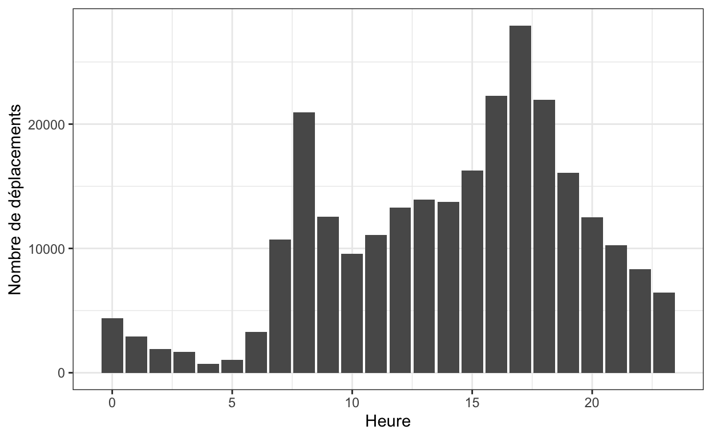
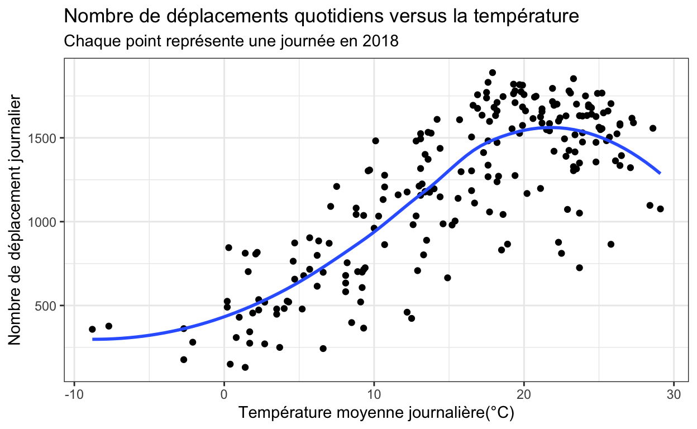

Étude de cas
Motivation
L’analyse des données de vélopartage à Montréal revêt une importance cruciale pour la promotion de la mobilité durable dans la ville. En examinant ces données, il est possible d’identifier les schémas d’utilisation des services de vélo en libre-service, les trajets fréquents, les zones de stationnement les plus sollicitées, et les périodes de pointe. Ces informations permettent aux autorités municipales de prendre des décisions éclairées pour améliorer l’efficacité du système, d’ajuster l’emplacement des stations en fonction de la demande, et de développer des infrastructures cyclables adaptées. De plus, l’analyse des données de vélopartage contribue à évaluer l’impact global sur la réduction des émissions de carbone, la congestion routière et la promotion d’un mode de transport écologique. Ces données offrent ainsi des perspectives précieuses pour orienter les politiques urbaines vers des solutions de mobilité plus durables et résilientes. Pour plus d’informations sur le plan de mobilité de la ville de Montréal, cliquez ici.
BIXI Montréal est un organisme à but non lucratif créé en 2014 par la Ville de Montréal pour gérer le système de vélopartage à Montréal. Le réseau comprend plus de 10 000 vélos (dont 2 600 BIXI électriques) et 865 stations sur le territoire montréalais, ainsi qu’à Laval, Longueuil, Boucherville, Terrebonne, Westmount, Ville de Mont-Royal et Montréal-Est.
Questions principales
La municipalité s’intéresse aux tendances dans l’utilisation des vélos. Elle désire en particulier connaître les périodes et les zones de forte utilisation des services de vélopartage dans le but d’étoffer son offre aux utilisateurs.
À travers cette analyse, vous comprendrez quand et où les Montréalais utilisent les vélos de BIXI, comment des facteurs tels que la température influencent le volume d’utilisation, et comment l’utilisation varie entre les quartiers et à l’intérieur de ceux-ci.
Nos questions principales sont :
- Comment la fréquence d’utilisation des stations de vélopartage BIXI varie-t-elle dans le temps et l’espace ?
- L’utilisation de vélopartage BIXI est-elle corrélée avec les conditions météorologiques et, si oui, comment?
Objectifs d’apprentissage
À la fin de cette étude, vous devriez connaître les méthodes et les notions suivantes :
Objectifs d’apprentissage en R :
- Prendre en main le logiciel R ;
- Explorer un jeu de données ;
- Manipuler un jeu de données ;
- Fusionner des jeux de données ;
- Faire une analyse descriptive ;
- Réaliser un graphique.
La majorité des librairies de l’étude vient de la librairie
tidyverse. tidyverse est conçu pour faciliter
l’installation et le chargement des packages en une seule commande.

Nous allons commencer par charger les packages dont nous aurons besoin :
library(readr)
library(dplyr)
library(ggplot2)
library(dplyr)
library(lubridate)
library(leaflet)Les packages utilisés dans cette étude de cas sont les suivants:
| Librairie | Utilisée dans cette étude de cas pour |
|---|---|
readr |
permettre l’importation de fichiers csv |
dplyr |
faciliter la manipulation de données |
ggplot2 |
faciliter la création de graphiques |
lubridate |
faciliter la manipulation, la transformation et l’analyse des objets de date et d’heure |
leaflet |
construire des cartes interactives |
Limites
Manque d’informations sur le contexte social des utilisateurs : Les données peuvent ne pas fournir suffisamment d’informations sur les caractéristiques socio-économiques des utilisateurs, limitant ainsi la compréhension des disparités d’utilisation selon ces facteurs.
Manque d’informations sur le parcours : Bien que les données comprennent les stations de départ et d’arrivée, elles peuvent ne pas inclure des informations détaillées sur le parcours emprunté, limitant la compréhension des itinéraires spécifiques.
Manque d’informations sur la motivation des utilisateurs : Les raisons pour lesquelles les utilisateurs choisissent le vélopartage (loisirs, déplacements professionnels, etc.) peuvent ne pas être explicitement fournies, limitant la compréhension des motivations derrière les comportements observés (le statut d’utilisateur, période d’utilisation, station fréquentée, les parcours empruntés et la durée d’utilisation).
Données
Les données sur l’utilisation du vélopartage de la ville de Montréal proviennent du portail de BIXI. Elles sont disponibles de Les données sont disponibles de 2014 à aujourd’hui. On a de l’information sur chacune des stations en activité, soit son nom, son code numérique et ses Les variables disponibles sont : les noms des stations, le code des stations, les coordonnées GPS. De plus, on a accès à plusieurs informations pour chacun des déplacements effectués : des stations, le statut d’utilisateurde l’utilisateur, les dates de départ et d’arrivée (année, mois, jour, heure, minute et seconde), la durée du trajet en secondes, et les stations de départ et d’arrivée.
Vous pouvez télécharger les données ici.
On le fait pour vous !
Cette section montre le processus complet de traitement des données. Il n’y a rien à faire de votre côté, vous pourrez travailler avec les données prétraitées dans la section suivante.
Données de vélopartage
En analyse de données, il est souvent nécessaire de procéder à d’importantes manipulations et transformations sur les jeux de données pour avoir un jeu de données exploitable. C’est ce que nous ferons ici.
Les données BIXI sont partagées différemment selon l’année. Entre 2014 et 2019, on trouve un fichier par mois, et depuis 2020 il n’y a qu’un fichier pour l’année entière.
Dans tous les cas, lorsque vous téléchargez le dossier zippé pour une
année spécifique (comme indiqué ci-dessus, vous pouvez télécharger les
données BIXI ici),
vous obtenez deux types de fichiers csv :
OD*.csv: rassemble les données de déplacements avec un fichier par mois (entre 2014 et 2019) et un fichier pour toute l’année entre 2020 et 2021. Le jeu de données possède les colonnes suivantes :- Start date : date de début du déplacement
- Start station code : code de la station de début du déplacement
- End date : date de fin du déplacement
- End station : code de la station de fin du déplacement
- Duration sec : durée du déplacement en secondes
- Is member : indicateur pour savoir si l’utilisateur est membre (1) ou non (0).
stations*.csv: rassemble les métadonnées des stations de vélopartage disponibles pour l’année. Le jeu de données possède les colonnes suivantes :- code : code de la station
- Name : nom de la station
- Latitude : latitude de la station
- Longitude : longitude de la station
On remarquera tout de suite que la colonne code est une
clé commune (ID de la station) pour les deux types de jeux de données :
déplacement et information sur les stations.
Une fois les données téléchargées, vous pouvez suivre les instructions suivantes pour regrouper vos données par an. Le code qui suit traite du cas des données de 2018.
Dans un premier temps, on télécharge directement depuis le site de données ouvertes les données, on les décompresse :
library(httr)
library(dplyr)
library(readr)
library(purrr)
library(utils)
# Liste des années pour lesquelles les données sont disponibles
years <- 2018:2018
# Liste des URL des fichiers ZIP pour chaque année
urls <- list(
"2018" = "https://s3.ca-central-1.amazonaws.com/cdn.bixi.com/wp-content/uploads/2023/06/Historique-BIXI-2018.zip")
)
# Fonction pour télécharger et décompresser les fichiers ZIP
download_and_unzip <- function(url, year) {
temp <- tempfile()
download.file(url, temp)
unzip(temp, exdir = paste0("bixi_", year))
unlink(temp)
}
# Téléchargement et décompression des fichiers pour chaque année
walk2(urls, names(urls), download_and_unzip)Tel que discuté dans la présentation des données, on peut utiliser le code de la station pour fusionner les données. Ainsi, nous créons une fonction qui permet de lire et fusionner les jeux de données :
# Fonction pour lire et traiter les fichiers de déplacements et de stations pour une année
process_year_data <- function(year) {
od_files <- list.files(path = paste0("bixi_", year), pattern = "OD.*\\.csv", full.names = TRUE)
station_file <- list.files(path = paste0("bixi_", year), pattern = "stations*", full.names = TRUE)
# Lire et concaténer les fichiers OD*
od_data <- od_files %>%
map_dfr(read_csv)
# Lire le fichier station
station_data <- read_csv(station_file)
colnames(station_data) <- tolower(colnames(station_data))
# Fusionner les données OD* avec les données de station
merged_data <- od_data %>%
left_join(station_data, by = c("start_station_code" = "code")) %>%
rename(start_station_name = name,
start_station_latitude = latitude,
start_station_longitude = longitude) %>%
left_join(station_data, by = c("end_station_code" = "code")) %>%
rename(end_station_name = name,
end_station_latitude = latitude,
end_station_longitude = longitude)
return(merged_data)
}Vous devez garder en tête que les données BIXI sont disponibles de 2014 à aujourd’hui. Donc, tous les prétraitements doivent être faits pour toutes les années, c’est pour cela que la fonction a été créée.
Pour terminer, on applique la fonction sur l’ensemble des années téléchargées :
# Traiter et combiner les données pour toutes les années
all_years_data <- map_dfr(names(urls), process_year_data)Données météorologiques
Pour cette analyse, nous utiliserons la température moyenne quotidienne provenant d’un jeu de données ouvert du gouvernement du Canada. Ces données météorologiques historiques de la station de l’aéroport de Montréal seront utilisées pour examiner le lien avec les données d’utilisation de BIXI.
Importation des données
Le prétraitement précédent a permis d’obtenir les données complètes pour l’année 2018 de déplacements et de données météorologiques. Il est à noter que la base de données complète compte plus de 5 millions (oui, millions !) de déplacements. Afin de s’assurer que les codes de ce logiciel s’exécutent rapidement, nous avons échantillonné aléatoirement une portion des données (10 %) :
library(data.table)
bixi_data = fread("data/data_bixi_sampled.csv")Notes : - Le jeu de données étant volumineux, la fonction
fread de la librairie data.table est utilisée
car elle est extrêmement rapide pour lire des fichiers CSV volumineux. -
Vous serez en mesure d’utiliser la base de données complète pour le
devoir à faire (voir dernière section de ce tutoriel).
Vue des données
Utilisez la fonction appropriée pour afficher les premières lignes de
notre jeu de données bixi_data.
head(bixi_data)À votre tour de jouer
Combien de déplacements de vélos au total y a-t-il eu en 2018 ?
Utilisez la boîte de code suivante pour répondre à la question :
Visualisation des données
Visualisation du trafic au cours de la journée
Voici le graphique du nombre total de déplacements par heure de la journée :
bixi_data %>% mutate(Heure = hour(ymd_hms(start_date))) %>%
group_by(Heure) %>%
mutate(`Nombre de déplacements` = n()) %>%
slice(1) %>%
ggplot(aes( x = Heure, y = `Nombre de déplacements`)) +
geom_col()+
theme_bw()
Il semble y avoir des pics d’utilisation du vélopartage à certains
moments de la journée. Il se peut que ces pics soient liés aux heures de
début et de fin de journée lorsque les utilisateurs vont au travail.
Afin de vérifier cette hypothèse, vous devrez d’abord créer une variable
weekend_ou_semaine qui identifie si c’est un jour de
semaine ou de fin de semaine. Pour cela, vous pouvez utiliser la
fonction weekdays dans lubridate, qui vous
donne le jour de la semaine pour une date donnée.
Tout d’abord, amusez-vous à bien comprendre comment fonctionne la
fonction weekdays :
Exemple de code pour explorer la fonction weekdays
Sys.Date()
weekdays(Sys.Date())Utiliser un calendrier pour vérifier que cela fonctionne bien.
Remplir les lignes dans le code suivant pour répondre à l’objectif de
créer weekend_ou_semaine :
bixi_data %>%
mutate(weekend_ou_semaine = ifelse(weekdays(`Date/Time`) %in% _____, "Weekend", "Semaine" )) %>%
head()Indice: La fonction weekdays donne le
jour de la semaine d’une date, ainsi quelle condition devrais vérifier
ce jour-là pour savoir si c’est la semaine ou le week-end. Pensez à
faire des tests de la fonction weekdays pour vous
aider.
bixi_data %>%
mutate(weekend_ou_semaine = ifelse(weekdays(`Date/Time`) %in% c("samedi", "dimanche"), "Weekend", "Semaine" )) %>%
head()Maintenant, tu vasvous allez devoir modifier le graphique ci-dessus pour qu’il affiche deux diagrammes à barres : un pour les jours de la semaine et un pour les jours de fin de semaine.
bixi_data %>% mutate(Heure = hour(ymd_hms(start_date))) %>%
group_by(Heure) %>%
mutate(`Nombre de déplacements` = n()) %>%
slice(1) %>%
ggplot(aes( x = Heure, y = `Nombre de déplacements`)) +
geom_col()+
theme_bw()Indice: Quelle fonction de ggplot2
permet de créer un graphique séparé selon les modalités d’une variable
?
bixi_data %>% mutate(Heure = hour(ymd_hms(start_date))) %>%
group_by(weekend_ou_semaine, Heure) %>%
mutate(`Nombre de déplacements` = n()) %>%
slice(1) %>%
ggplot(aes( x = Heure, y = `Nombre de déplacements`)) +
geom_col()+
theme_bw()+
facet_grid(weekend_ou_semaine~., scales = "free_y")Question de réflexion
Que pouvez-vous dire sur la différence de trafic au cours d’une journée entre la fin de semaine et les jours de la semaine ?
Corrélation entre les habitudes de vélo et la température
Nous allons maintenant regarder s’il y a une corrélation entre la température moyenne et le nombre de trajets en vélo BIXI. Pour ce faire, nous allons d’abord commencer par créer une base de données agrégée par jour, puisque nous avons l’information sur la température moyenne jour par jour.
Vous devez créer une base de données regroupée par jour du nombre total de déplacements :
bixi_data_day <- bixi_data %>%
group_by(____) %>%
mutate(`Nombres de déplacement par jour` = ____) %>%
slice(1)bixi_data_day <- bixi_data %>%
group_by(Month, Day) %>%
mutate(`Nombres de déplacement par jour` = n()) %>%
slice(1)Maintenant que nous avons une base de données
bixi_data_day agrégée par jour, nous allons pouvoir
visualiser le lien qui peut exister entre la température moyenne et le
nombre de déplacements.
À votre tour de jouer
Vous allez devoir reproduire un graphique qui représente au mieux le lien qui peut exister entre la température moyenne et le nombre de déplacements par jour. Vous devez reproduire le graphique suivant :

Question de réflexion
Que pouvez-vous conclure sur le lien qu’il existe entre la température moyenne et la fréquence d’utilisation du vélopartage à Montréal ?
Attention : ce qu’on observe ici ce sont des corrélations. Il faut faire attention de ne pas formuler nos conclusions en termes de causalité. Par exemple, on ne devrait pas dire qu’une augmentation de la température augmente le nombre de déplacements, mais plutôt que des températures plus élevées sont associées à des déplacements plus élevés. Après tout, il ne s’agit pas une expérience contrôlée donc rien ne dit que la causalité, si causalité il y a, n’est pas dans l’autre sens : un grand nombre de déplacements causant une augmentation de la température!
Distribution spatiale de l’utilisation dans la ville de Montréal
Nous allons ici nous intéresser à la distribution spatiale des déplacements le jour de la fête nationale, le 24 juin 2018. Voici le code qui permet de générer la carte interactive.
bixi_data_day_station <- bixi_data %>%
filter(Month == 6, Day == 24) %>%
group_by(start_station_code) %>%
mutate(start_station_day = n()) %>%
slice(1)
library(leaflet)
library(leaflet.extras)
# Créer une carte interactive
map <- leaflet(bixi_data_day_station) %>%
addTiles() %>%
addCircleMarkers(
~start_station_longitude, ~start_station_latitude,
radius = ~(sqrt(start_station_day)), # Dimensionner les cercles selon le nombre de déplacements
popup = ~paste(start_station_name, "<br>", start_station_day, "déplacements"), # Ajouter un popup avec le nom et les déplacements
color = "blue",
fillOpacity = 0.5,
clusterOptions = markerClusterOptions() # Ajouter l'option de clustering
)
# Afficher la carte
mapÀ votre tour de jouer
Combien de déplacements de vélos y a-t-il eu lors de la fête nationale de 2018 à la station du Parc Jean-Drapeau sur l’île Sainte-Hélène ?
Pour aller plus loin
Seriez-vous capable de créer un graphique similaire, mais où chaque
station est représentée non pas par le nombre de déplacements mais
plutôt par l’afflux net de vélos par station ? C’est-à-dire, calculer
pour chaque jour, combien de vélos sont arrivés
(end_station) moins le nombre de vélos qui ont quitté cette
station (start_station).
Analyse de données
Dans cette section, nous allons tenter de répondre à d’autres questions sur l’utilisation de BIXI à l’aide de statistiques descriptives.
Membres du service BIXI
Commençons par nous intéresser à la répartition des membres du
service de vélopartage Bixi selon l’utilisation. Dans la base de données
bixi_data, nous avons une colonne is_member
qui vaut 1 si le déplacement a été effectué par un membre du service et
0 sinon.
Créez une table qui indique pour chaque journée la proportion des utilisateurs qui détiennent un abonnement.
bixi_databixi_data_member <- bixi_data %>% group_by(Month, Day) %>% summarise(m = mean(is_member, na.rm = TRUE))
bixi_data_member %>% ungroup() %>% filter( m == min(m))Question de réflexion
Quelle est la journée en 2018 où la proportion de déplacements par des non-membres est la plus importante ? Est-ce que cette journée est particulière selon vous ?
Basé sur la réflexion précédente, nous allons maintenant nous poser la question suivante : la proportion de personnes utilisant BIXI sans abonnement est-elle plus forte en été (juillet, août) ? On pourrait en effet penser qu’en été, lors des vacances estivales, plusieurs personnes utilisent le service sans être membres.
Utilisez la boîte suivante pour produire un code qui permet de répondre à cette question :
bixi_data %>% mutate(summer = ifelse(Month %in% 7:8, "Oui", "Non"))bixi_data %>% mutate(summer = ifelse(Month %in% 7:8, "Oui", "Non")) %>% group_by(summer) %>% summarise(m = mean(is_member))Moment le plus et le moins populaire
Nous allons répondre aux questions suivantes :
- Quels sont les jours de la semaine les plus et les moins populaires en termes d’utilisation?
- Quelles sont les heures de la journée les plus et les moins populaires en termes d’utilisation?
Pour commencer avec les jours de la semaine, nous pouvons faire un
tableau récapitulatif par jour de la semaine (rappelez-vous, nous
pouvons utiliser la fonction weekdays), du nombre total de
déplacements :
bixi_data %>% mutate(`Jour de la semaine` = weekdays(`Date/Time`)) %>%
group_by(`Jour de la semaine`) %>%
summarise(`Nombre de déplacement total` = n())On voit donc que la journée la plus populaire est le vendredi et la moins populaire est le dimanche. Surprenant ? Aimez-vous faire du vélo le dimanche ?
À votre tour de jouer
Faites une analyse similaire pour voir quel moment de la journée (heure) est le plus et le moins populaire.
bixi_databixi_data%>%
mutate(hour_interval = paste0(hour(start_date), "h-", hour(start_date) + 1, "h")) %>%
group_by(hour_interval) %>%
summarise(`Nombre de déplacement total` = n())Station la plus et la moins populaire
Nous allons examiner ici quelle est la station de départ la plus populaire et la moins populaire :
pluspop <- bixi_data %>%
group_by(start_station_name) %>%
summarise(`Nombre de déplacement total` = n()) %>%
arrange(desc(`Nombre de déplacement total`)) %>%
head()
pluspopmoinspop <- bixi_data %>%
group_by(start_station_name) %>%
summarise(`Nombre de déplacement total` = n()) %>%
arrange(`Nombre de déplacement total`) %>%
head()
moinspopAinsi la station Mackay / de Maisonneuve est la plus populaire avec en 2018 et la moins populaire est celle de Place Longueuil.
Question de réflexion (difficile)
Quelles sont les stations qui s’épuisent le plus rapidement et le plus lentement ?
Pour répondre à cette question, vous allez devoir suivre les étapes suivantes :
- Pour chaque station de départ à chaque jour, calculer le nombre
total de départs à cette station -> appeler ce jeu de données
bixi_data_depart - Pour chaque station d’arrivée à chaque jour, calculer le nombre
total d’arrivées à cette station -> appeler ce jeu de données
bixi_data_arrivee - Fusionner les deux jeux de données avec comme clé commune la station
et la date -> appeler ce jeu de données
bixi_data_rate - Calculer la variable de taux d’épuisement
ratepar le rapport entre le nombre de départs et d’arrivées de vélos à chaque station chaque jour.
Faites une analyse détaillée incluant des graphiques et des statistiques descriptives pour déterminer quelles stations s’épuisent le plus ou le moins rapidement.
Résumé
Dans cette étude de cas, nous nous sommes intéressés à l’utilisation du service de vélopartage BIXI à Montréal. Nous avons utilisé les données de fréquentation de 2018 en les combinant avec les données météorologiques.
Voici un top des observations intéressantes que nous avons découvertes grâce à l’analyse de données :
- Il y a énormément de déplacements en une année : plus de 5 millions en 2018.
- La répartition par heure du nombre de déplacements n’est pas la même la semaine et le week-end. En effet, les gens travaillent la semaine et les heures de pointe sont bien reflétées dans l’utilisation en semaine du service de vélo.
- Plus il fait chaud, plus les gens utilisent le service de vélo. Néanmoins, on observe un plateau pour les hautes températures. Une chance ! Aimeriez-vous faire du vélo par une belle journée à 45 degrés ?
- Il y a plus de membres que de non-membres du service BIXI. Toutefois, les non-membres semblent utiliser davantage le service en été.
- Sans surprise, les moments les plus populaires dans une journée pour faire du vélo sont entre 16 h et 19 h, alors que les moins populaires sont entre 2 h et 6 h du matin.
- La ville de Montréal peut faire une saine gestion des stations de vélo, car elle est en mesure de savoir efficacement quelles stations sont les plus (ou les moins) utilisées et même d’identifier les taux d’épuisement. Cela permet d’envoyer les camions pour ajouter (ou enlever) des vélos à des stations bien spécifiques.
Devoir à faire
En utilisant ce tutoriel et les données de 2018, vous devez répondre aux questions suivantes :
- Est-ce que les utilisateurs du service BIXI aiment faire du vélo lorsqu’il pleut ?
- Faire une carte interactive qui permet de visualiser le taux d’épuisement des stations dans la ville de Montréal à une date choisie (vous pouvez la choisir).
- Voici un code R qui permet de trouver les dates des jours fériés :
# Installer et charger le package timeDate
install.packages("timeDate")
library(timeDate)
# Fonction pour obtenir les jours fériés au Canada
# Fonction pour calculer la Fête du Travail (1er lundi de septembre)
labourDay <- function(year) {
as.Date(cut(as.Date(paste(year, "-09-01", sep = "")), "week")) + 1
}
# Fonction pour calculer l'Action de grâce (2ème lundi d'octobre)
thanksgivingDay <- function(year) {
as.Date(cut(as.Date(paste(year, "-10-08", sep = "")), "week")) + 7
}
# Fonction pour calculer la Fête de la Reine (lundi avant le 25 mai)
victoriaDay <- function(year) {
date <- as.Date(paste(year, "-05-24", sep = ""))
date - as.numeric(format(date, "%w"))
}
# Fonction pour obtenir les jours fériés au Canada
canadianHolidays <- function(year) {
# Calculer les jours fériés fixes et mobiles
new_years_day <- as.Date(paste(year, "-01-01", sep = ""))
canada_day <- as.Date(ifelse(weekdays(as.Date(paste(year, "-07-01", sep = ""))) == "Sunday",
paste(year, "-07-02", sep = ""),
paste(year, "-07-01", sep = "")))
christmas_day <- as.Date(paste(year, "-12-25", sep = ""))
boxing_day <- as.Date(paste(year, "-12-26", sep = ""))
# Jours fériés mobiles
good_friday <- as.Date(as.character(GoodFriday(year)))
easter_monday <- as.Date(as.character(EasterMonday(year)))
labour_day <- labourDay(year)
victoria_day <- victoriaDay(year)
thanksgiving_day <- thanksgivingDay(year)
# Combiner les jours fériés
holidays <- c(
new_years_day,
good_friday,
easter_monday,
victoria_day,
canada_day,
labour_day,
thanksgiving_day,
christmas_day,
boxing_day
)
# Retourner les jours fériés triés
sort(holidays)
}
# Exemple d'utilisation
canadianHolidays(2024)Faites une analyse statistique pour déterminer la popularité du service BIXI lors des jours fériés au Canada.
Dans ce tutoriel, seul un échantillon des déplacements a été utilisé par souci d’efficacité. Afin de lire le jeu de données complet, vous pouvez utiliser le code suivant :
library(feather)
library(httr)
### éléments à conserver pour tout le tutoriel
# URL du fichier Feather sur Dropbox avec accès direct
file_url <- "https://www.dropbox.com/scl/fi/nhubszv1juaamvcucqile/bixi_data.feather?rlkey=p2e2i59ttbqw2jvs2e1qsds89&st=a9islp89&dl=1"
# Utiliser httr pour télécharger le fichier Feather localement
res <- GET(file_url, write_disk("local_file.feather", overwrite = TRUE))
# Lire le fichier Feather
bixi_data <- read_feather("local_file.feather")